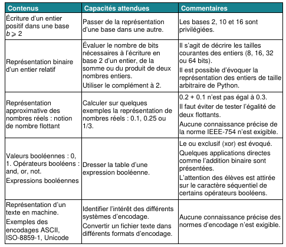
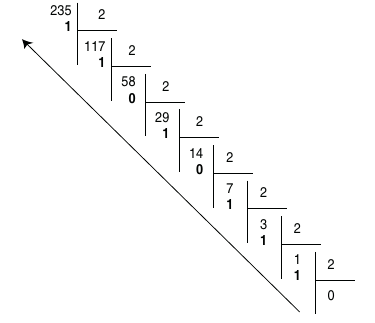
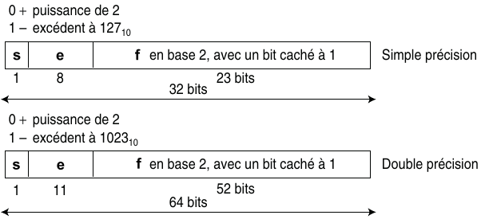
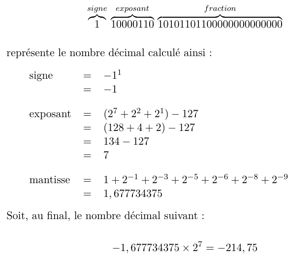
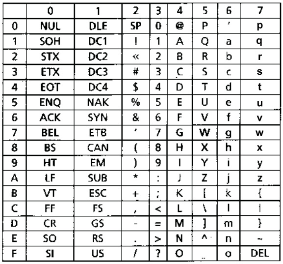
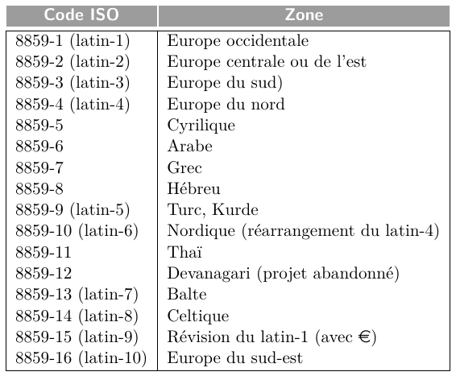
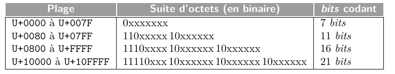
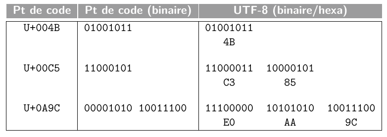

Représentation des données en machine¶
Extrait du programme
Voici un extrait du programme indiquant les notions à maîtriser sur ce thème.

Dans un ordinateur, toutes les informations (données ou programmes) sont représentées à l’aide de deux chiffres : le 0 et 1, appelés chiffres binaires ou Binary Digits (bits) en anglais.
Dans la mémoire d’un ordinateur (RAM, ROM, registres des microprocesseurs, etc.), ces chiffres binaires sont regroupés par paquets de 8, que l'on appelle octets (ou bytes en anglais), puis organisés en mots machine (ou words en anglais) de 2, 4 ou 8 octets en général. Un ordinateur de 32 bits par exemple manipule directement des mots de 4 octets (4 octets × 8 bits = 32 bits) lorsqu’il effectue des opérations en mémoire ou dans ses calculateurs.
Le regroupement des bits en octets ou mots machine permet de représenter des données telles que des nombres entiers, des nombres réels (on verra que l'on ne peut représenter que des approximations des nombres réels), ou encore des caractères et des textes (on introduira la notion d'encodage).
Représentation des entiers naturels¶
L'encodage le plus simple est celui des nombres entiers naturels (nombres entiers positifs).
Pour représenter des nombres, les ordinateurs utilisent le système binaire :
Le codage binaire d’un nombre positif \(n\) est la suite de \(k\) bits \(b_{k - 1} ... b_0\) telle que
\(n = b_{k − 1} × 2^{k − 1} + b_{k − 2} × 2^{k − 2} + ... + b_1 × 2^1 + b_0 × 2^0\) . Ainsi le nombre \(42\) en décimal est représenté par \(101010\) en binaire :
\(42 = \textbf{1} × 2⁵ + \textbf{0} × 2⁴ + \textbf{1} × 2³ + \textbf{0} × 2² + \textbf{1} × 2¹ + \textbf{0} × 2⁰\)
\(42 = \textbf{1} × 2⁵ + \textbf{1} × 2³ + \textbf{1} × 2^1\)
\(42 = 32 + 8 + 2\)
À vous de jouer
Voici des nombres entiers en base binaire, donner l'écriture en base décimale de ces nombres :
- \(0100 1010_2\)
- \(1111 0101_2\)
Le codage binaire d'un nombre décimal consiste à passer de la base 10 (base décimale) à la base 2, mais il existe d'autres bases comme la base 8 (base octale), ou la base 16 (base hexadécimale).
Chiffres autorisés selon la base X de représentation
Base 2 : chiffre \(0\) et \(1\).
Base 8 : chiffre \(0, 1, 2, 3, 4, 5, 6, 7\).
Base 10 : chiffre \(0, 1, 2, 3, 4, 5, 6, 7, 8, 9\)
Base 16 : chiffre \(0, 1, 2, 3, 4, 5, 6, 7, 8, 9, A, B, C, D, E, F\) avec \(A = 10_{10}, B = 11_{10}, C = 12_{10}, D = 13_{10}, E = 14_{10}, F = 15_{10}\).
Rappels - Écriture en base 10
Un nombre entier en base 10 est une séquence de chiffres compris entre \(0\) et \(9\). Pour calculer la valeur d’une séquence \(c_{k−1} , c_{k−2} , . . . , c_{1} , c_{0}\) de \(k\) chiffres, on affecte à chaque chiffre \(c_n\) un poids \(10^n\), ce poids étant une puissance de 10 qui dépend de sa position \(n\) dans la séquence, et on calcule la somme des termes \(c_n × 10^n\).
Si l'on prend l’exemple de la séquence \(61027\), et qu'on la représente en différentes colonnes, en indiquant la position de chaque chiffre, en commençant à compter les indices et les poids correspondants à partir de \(0\) de la droite vers la gauche, on obtient :
| séquence | 6 | 1 | 0 | 2 | 7 |
|---|---|---|---|---|---|
| position | 4 | 3 | 2 | 1 | 0 |
| poids | 10⁴ | 10³ | 10² | 10¹ | 10⁰ |
La valeur de la séquence est un entier, que l'on notera \(N\), calculé de la manière suivante :
\(N = 6 × 10^4 + 1 × 10^3 + 0 × 10^2 + 2 × 10^1 + 7 × 10^0\)
Plus généralement, une séquence \(d_{k−1} , d_{k−2} , . . . , d_1 , d_0\) de \(k\) chiffres décimaux \(d_i\) correspond au nombre \(N\) suivant :
\(N = d_{k−1} × 10^{k−1} + d_{k−2} × 10^{k−2} + · · · + d_1 × 10^1 + d_0 × 10^0\)
Rappels - Écriture en base 2
Tout comme l’encodage en base 10, une séquence de chiffres binaires peut s’interpréter comme un nombre écrit en base 2. Dans cette base, chaque chiffre (0 ou 1), appelé bit, de la séquence est associée à un poids \(2^i\) et à une puissance de 2 qui dépend de sa position \(i\).
Par exemple, l’octet (suite de 8 bits) \(0100 1101\) peut être représenté de la manière suivante.
| séquence | 0 | 1 | 0 | 0 | 1 | 1 | 0 | 1 |
|---|---|---|---|---|---|---|---|---|
| position | 7 | 6 | 5 | 4 | 3 | 2 | 1 | 0 |
| poids | 2⁷ | 2⁶ | 2⁵ | 2⁴ | 2³ | 2² | 2¹ | 2⁰ |
La valeur de cette séquence, que l'on notera \(N\), est calculée comme suit :
\(N = 0 × 2^7 + 1 × 2^6 + 0 × 2^5 + 0 × 2^4 + 1 × 2^3 + 1 × 2^2 + 0 × 2^1 + 1 × 2^0\)
\(N = 77_{10}\)
Plus généralement, une séquence \(b_{k−1} , b_{k−2} , . . . , b_1, b_0\) de \(k\) bits \(b_i\) correspond au nombre \(N\) suivant :
\(N = b_{k−1} × 2^{k−1} + b_{k−2} × 2^{k−2} + · · · + b_1 × 2^1 + d_0 × b^0\)
Cette manière d'encoder les entiers naturels à l'aide de séquences de \(k\) bits permet de représenter les entiers de \(0\) à \(2^k − 1\). Sur 1 octet (= 8 bits) par exemple, on peut donc représenter les entiers naturels de \(0\) à \(255\).
Rappels - Base 16 (hexadécimale)
...
Méthode des divisions euclidiennes successives¶
Si l'on souhaite par exemple représenter \(235_{10}\) en base 2 :

L'écriture binaire de \(235_{10}\) sur 8 bits est donc \(1110 1011_2\).
Si l'on souhaite convertir un nombre vers la base 16 (en hexadécimal), le principe est le même, mais on divisera par 16 au lieu de diviser par 2. On rappelle qu'en hexadécimal, les valeurs vont de \(0\) à \(F\) : \(1, 2, ..., 8, 9, A, B, ... E, F\), les restes supérieurs à \(9\) devront donc être remplacés par une lettre.
Méthode des soustractions¶
Pour convertir un entier noté \(N\) en base \(X\), on procède comme suit :
La plus grande puissance de \(X\) qui est inférieure ou égale à \(N\) est soustraite à \(N\). Ce processus de soustraction est répété sur le reste de la différence, jusqu’à obtenir un résultat égal à 0. Le nombre \(N\) exprimé en base \(X\) est alors obtenu en notant le nombre de fois où une même puissance de \(X\) a été retirée, et cela pour chaque puissance depuis la plus grande apparaissant, dans l’ordre décroissant des puissances.
Dans le cas d'une conversion vers la base 2, chaque puissance de \(X\) ne peut être retirée qu'une seule fois (car les seules valeurs possibles en binaire sont 0 et 1.)
Exemples :
Si l'on souhaite convertir \(125_{10}\) en base 2 :
On sait que \(2⁰ = 1; 2¹ = 2; 2² = 4; 2³ = 8; 2⁴ = 16; 2⁵ = 32; 2⁶ = 64; 2⁷ = 128\).
\(125 - \textbf{64} = 61; 61 - \textbf{32} = 29; 29 - \textbf{16} = 13; 13 - \textbf{8} = 5; 5 - \textbf{4} = 1; 1 - \textbf{1} = 0;\)
Donc \(125_{10} = 0111~1101\).
Si l'on souhaite convertir \(235_{10}\) en base 8 :
On sait que \(8^0 = 1; 8¹ = 1; 8^2 = 64; 8^3 = 512\).
\(235 – 64 = 171; 171 – 64 = 107; 107 – 64 = 43; 43 – 8 = 35; 35 – 8 = 27; 27 – 8 = 19;\)
\(19 – 8 = 11; 11 – 8 = 3; 3 – 1 = 2; 2 – 1 = 1; 1 – 1 = 0\)
Donc \(235_{10} = 3 × 64 + 5 × 8 + 3 × 1 = 353_8\).
Convertir un nombre de la base 2 vers la base 16¶
Pour convertir un nombre de la base 2 vers la base 16, c'est simple : il suffit de faire des paquets de 4 bits, et de coder chaque paquet avec une valeur hexadécimale. Par exemple, si l'on reprend l'écriture binaire précédente : \(1110~1011_2\), le premier groupe \(1110\) se code par \(14\) en décimal, et donc par \(E\) en hexadécimal. Le deuxième groupe \(1011\) se code par \(11\) en décimal, et donc par \(B\) en hexadécimal. Ainsi, \(235_{10} = 1110~1011_2 = EB_{16}\).
À l'inverse, convertir un nombre exprimé en base 16 vers la base 2 s’effectue en remplaçant simplement chacun des chiffres du nombre en base 16 par leur équivalent binaire sur 4 bits.
Par exemple :
\(45 A_{16} = 0100~0101~1010_2\) et \(1100~1111_2 = CF_{16}\)
Quelques exercices¶
Exercice 1
En utilisant la méthode des divisions euclidiennes successives, donner l'écriture binaire du nombre 147 sur 8 bits. À partir de l'écriture binaire obtenue, donner son écriture hexadécimale.
Exercice 2
En utilisant la méthode des soustractions successives, donner l'écriture binaire du nombre 169 sur 8 bits. À partir de l'écriture binaire obtenue, donner son écriture hexadécimale.
Exercice 3
Donner la représentation en base 2 et sur 8 bits des entiers 14, 218, 42 et 57.
Vous pourrez vérifier vos réponses avec la fonction bin de Python. La fonction bin prend un nombre entier en entrée, et renvoie la représentation binaire de ce nombre.
Par exemple :
Ici, on voit que l'écriture binaire de 42 est \(101010\). Le 0b indique la base (b pour binaire, o pour octal, x pour hexadécimal).
Exercice 4
Donner la représentation en base 16 des entiers binaires suivants.
- 1001010
- 100010001
- 1010010011110010
Vous pourrez vérifier vos réponses avec la fonction hex de Python. La fonction hex prend un nombre entier en entrée, et renvoie la représentation hexadécimale de ce nombre.
Par exemple :
Ici, on voit que l'écriture hexadécimale de 42 est \(2A\). Le 0x indique la base (b pour binaire, o pour octal, x pour hexadécimal).
Exercice 5
Quelle est la valeur en base 10 de l’entier qui s’écrit \(BEEF\) en base 16 ?
Représentation des entiers relatifs¶
La représentation d’un nombre signé s’effectue selon une séquence binaire d’une longueur fixée à \(n\) bits. Cette longueur peut être de 8 bits, de 16 bits ou de 32 bits.
Plusieurs conventions de représentation existent. Le choix de la convention est effectué par le constructeur de la machine, et éventuellement par le programmeur en fonction du type affecté aux variables déclarées. Dans le langage C par exemple, déclarer une variable avec un type int, détermine une représentation sur 2 octets selon la convention du complément à 2. Par ailleurs, une déclaration avec un type unsigned short détermine une représentation d’un nombre sur 8 bits, non signé.
Convention de la valeur signée¶
Dans cette convention, le bit de poids fort (c'est-à-dire celui qui est tout à gauche de l'écriture) correspond au signe (\(0\) pour un entier positif, \(1\) pour un entier négatif). Tous les autres bits codent la valeur absolue du nombre.
Exemple :
- Représentation de \(+ 77_{10}\) sur 8 bits : \(01001101_2\).
- Représentation de \(– 77_{10}\) sur 8 bits : \(11001101_2\).
On peut faire les remarques suivantes sur cette représentation :
- deux représentations de la valeur \(0\) sont possibles, l'une correspondant à un zéro positif (\(00000000_2\) = \((+ 0)_{10}\) sur 8 bits), l'autre à un zéro négatif (\(10000000_2\) = \((– 0)_{10}\) sur \(8\) bits);
- l’intervalle des nombres signés représentables est borné en fonction de la longueur de la chaîne binaire utilisée pour la représentation. Sur \(8\) bits par exemple, l’intervalle des nombres représentables est \([11111111_2, 01111111_2]\), soit l’intervalle \([-127_{10}, + 127_{10}]\). L’arithmétique des machines est donc différente de celle de l’être humain puisque l’intervalle des nombres n’est pas infini, mais dépend de la longueur des chaînes de bits manipulées par la machine;
- pour effectuer une soustraction, il est nécessaire d'utiliser un circuit particulier différent de celui permettant d'effectuer des additions.
Voici les valeurs représentables avec cette convention selon la longueur de la chaine de bits fixée :
| Longueur de la chaine de bits | Intervalle de base 10 |
|---|---|
| \(8\) bits | \([- 127, + 127]\) |
| \(16\) bits | \([- 32 767, + 32 767]\) |
| \(32\) bits | \([– 2 147 483 647, + 2 147 483 647]\) |
| \(p\) bits | \([– 2^{p – 1} – 1, + 2^{p – 1} – 1]\) |
Convention du complément à 2¶
Le complément à 2 ou complément vrai d’un nombre binaire \(N = b_{n–1} ... b_0\) s’obtient en ajoutant la valeur \(1\) au complément restreint ou complément à 1 de ce nombre.
Le complément à 1 ou complément restreint d’un nombre binaire \(N = b_{n-1} ... b_0\) s’obtient en inversant la valeur de chacun des bits de ce nombre.
Exemple :
| \(10001001_2\) | |
|---|---|
| complément à 1 | \(01110110_2\) |
| + \(1_2\) | |
| complément à 2 | \(01110111_2\) |
Dans la convention du complément à 2, un nombre négatif \(– N\) exprimé sur \(n\) bits est représenté en prenant le complément à 2 de son équivalent positif \(+ N\). Un nombre positif \(+ N\) est quant à lui représenté par sa valeur binaire sur \(n\) bits.
Exemple :
| Représentation de \(+ 77_{10}\) sur 8 bits : | \(01001101_2\) | |
|---|---|---|
| Représentation de \(– 77_{10}\) sur 8 bits : | \(+ 77_{10}\) | \(01001101_2\) |
| complément restreint : | \(10110010_2\) | |
| \(+\) | \(1_2\) | |
| complément vrai : | \(10110011_2\) |
On peut faire les remarques suivantes sur cette représentation :
- une seule représentation du zéro est admise : \(00000000_2\) = \((+ 0)_{10}\) sur \(8\) bits.
- l’intervalle des nombres signés représentables est borné en fonction de la longueur de la chaîne binaire utilisée pour la représentation. Sur \(8\) bits par exemple, l’intervalle des nombres représentables est \([10000000_2, 01111111_2]\), soit l’intervalle \([– 128_{10}, + 127_{10}]\). La chaîne \(10000000_2\) après le complément à 2 donne de nouveau la chaîne \(10000000_2\). Par convention, elle représente la valeur \(- 128_{10}\) ;
- pour effectuer une soustraction, il n'est pas nécessaire d'utiliser un circuit particulier, puisque soustraire un nombre A à un autre nombre B équivaut à additionner au nombre B le complément à 2 du nombre A.
Voici les valeurs représentables avec cette convention selon la longueur de la chaine de bits fixée :
| Longueur de la chaine de bits | Intervalle de base 10 |
|---|---|
| \(8\) bits | \([- 128, + 127]\) |
| \(16\) bits | \([- 32 768, + 32 767]\) |
| \(32\) bits | \([– 2 147 483 648, + 2 147 483 647]\) |
| \(p\) bits | \([– 2^{p – 1}, + 2^{p – 1} – 1]\) |
Binaire vers décimal¶
L'opération inverse, permettant de retrouver un entier codé avec la convention du complément à 2, est assez simple à effectuer.
Le bit de poids fort (celui qui est tout à gauche) de la chaîne binaire peut être également inter-prété comme bit de signe. Ainsi :
- s'il vaut \(\textbf{0}\), alors la chaîne binaire représente un nombre positif \(+ N\) dont la valeur décimale est donnée directement par la conversion de la chaîne depuis la base 2 vers la base 10;
- s'il vaut \(\textbf{1}\), alors la chaîne binaire représente un nombre négatif \(– N\) dont la valeur décimale est celle du nombre positif associé \(+ N\) obtenu en complémentant de nouveau à 2 la chaîne, ou plus simplement en inversant tous les bits situés à gauche de premier bit à 1 (en partant de la droite).
Conversion binaire (complément à 2) vers décimal
\(0011~0011_2\) : Le bit de poids fort est à 0 (nombre positif), donc on convertit simplement vers la base 10 :
\(1011~1100_2\) : Le bit de poids fort est à 1 (nombre négatif), donc :
- soit on refait le complément à 2,
- soit on inverse tous les bits situés à gauche du premier bit à 1 en partant de la droite, ce qui donne ici : \(\textbf{1011 1}100_2 → \textbf{0100 0}100_2\).
\(0100~0100_2 = 68_{10}\), donc il ne reste qu'à ajouter le signe \(-\)
Bit de carry¶
Lors d’une opération arithmétique effectuée sur des nombres de \(p\) bits, un \(p + 1er\) bit peut être généré. Ce bit supplémentaire de poids fort est mémorisé comme étant le bit de carry par un indicateur de 1 bit noté \(C\) dans un registre du processeur appelé registre d'état (PSW).
Par exemple, l'addition de \(0111~1111_2\) (\(+ 127\)) et \(1111~1110\) (\(- 2\)) :
| \(0111\) | \(1111_2\) | ||
|---|---|---|---|
| + | \(1111\) | \(1110_2\) | |
| 1 | \(0111\) | \(1101_2\) |
Ici, le 9ème bit est le bit de carry.
Overflow¶
Lorsque l'on effectue une opération mathématique impliquant des nombres de même signe et ayant chacun \(p\) bits, il est possible que le résultat dépasse la capacité de représentation de la machine. En d'autres termes, ce résultat peut être en dehors de la plage des nombres que la machine peut représenter en utilisant la convention choisie pour ces nombres signés.
Dans de tels cas, le résultat obtenu est incorrect par rapport à son interprétation prévue : on appelle cela un overflow ou un dépassement de capacité. Tout comme le carry, la survenue d'un overflow est enregistrée dans le registre d'état (PSW) du processeur à l'aide d'un indicateur d'un bit, généralement noté \(O\).
Par exemple, si l'on effectue l'addition des nombres \(+ 127_{10}\) et \(+ 2_{10}\) représentés selon la convention du complément à 2 :
| \(0111\) | \(1111_2\) | |
|---|---|---|
| + | \(0000\) | \(0010_2\) |
| \(1000\) | \(0001_2\) |
Le résultat obtenu est le nombre \(– 127_{10}\) et non pas la valeur attendue \(+ 129_{10}\). Il y a ici un dépassement de capacité. En effet, l’intervalle des nombres représentables sur \(8\) bits selon la convention du complément à 2 est \([– 127_{10}, + 127_{10}]\).
Pourquoi préfère t-on cette convention ?
La convention du complément à 2 est généralement préférée à celle de la valeur signée pour les raisons suivantes :
-
Simplicité des opérations arithmétiques : Avec le complément à 2, les opérations arithmétiques telles que l'addition et la soustraction fonctionnent de la même manière que pour les nombres non signés, en utilisant le même matériel de calcul. Cela simplifie considérablement la conception des circuits électroniques et les opérations de base, car il n'est pas nécessaire de traiter les cas spéciaux pour les nombres signés.
-
Unicité de la représentation : En utilisant le complément à 2, chaque nombre a une représentation unique. Cela signifie qu'il n'y a pas de valeur positive et négative qui se chevauchent, ce qui évite les ambiguïtés.
-
Facilité de conversion : La conversion entre nombres signés et non signés (et vice versa) est plus simple avec le complément à 2 que avec d'autres méthodes de représentation signée. Il suffit d'appliquer le complément à 2 sur un nombre négatif pour obtenir sa représentation positive, et vice versa.
-
Prise en charge native des opérations binaires : Le complément à 2 est idéal pour les ordinateurs, qui traitent naturellement les opérations binaires. La représentation en complément à 2 facilite les opérations bit à bit, ce qui est essentiel pour la conception des processeurs.
-
Gestion de l'overflow : Lorsque des opérations arithmétiques dépassent la capacité de stockage d'un registre, le complément à 2 permet de gérer naturellement les dépassements (overflow) sans nécessiter de matériel ou de logiciel supplémentaire compliqué.
Exercice 6
Donner la représentation en complément à 2 et sur 8 bits des entiers -10, -128, -42 et 97.
Exercice 7
Donner en base 10 la valeur des octets signés \(11100111\) et \(11000001\).
Plus d'exercices
Vous pouvez également vous entraîner sur les exercices proposés à la fin de cette page (IUT de Reims).
Addition et soustraction de nombres entiers¶
Pour additionner deux nombres entiers en écriture binaire, on utilise le même principe que dans le système décimal, en additionnant les chiffres un à un, de droite à gauche. La table d’addition des nombres binaires est la suivante :
- 0 + 0 = 0
- 0 + 1 = 1
- 1 + 0 = 1
- 1 + 1 = 10, c’est-à-dire 0 avec une retenue de 1
- 1 + 1 + 1 = 11, c’est-à-dire 1 avec une retenue de 1
On souhaite par exemple additionner les entiers \(42_{10} = 00101010_2\) et \(14_{10} = 00001110_2\) :
| (1) | (1) | (1) | |||||||
|---|---|---|---|---|---|---|---|---|---|
| 0 | 0 | 1 | 0 | 1 | 0 | 1 | 0 | (42) | |
| + | 0 | 0 | 0 | 0 | 1 | 1 | 1 | 0 | (14) |
| = | 0 | 0 | 1 | 1 | 1 | 0 | 0 | 0 | (56) |
Si l'on souhaite faire une soustraction, par exemple si l'on souhaite soustraire \(14\) à \(42\), le plus simple est de faire une addition entre \(42\) et le complément à 2 de \(14\).
Le complément à 2 de \(14_{10} = 00001110_2\) est \(11110010_2\), donc :
| (1) | (1) | (1) | (1) | ||||||
|---|---|---|---|---|---|---|---|---|---|
| 0 | 0 | 1 | 0 | 1 | 0 | 1 | 0 | (42) | |
| + | 1 | 1 | 1 | 1 | 0 | 0 | 1 | 0 | (-14) |
| = | 0 | 0 | 0 | 1 | 1 | 1 | 0 | 0 | (28) |
Dépassement de capacité :
L’addition de deux nombres entiers peut dépasser la capacité de représentation des mots binaires: en effet, pour représenter un nombre \(n\) en binaire, il faut \(\lceil log_2(n) \rceil\) bits. La somme de deux nombres \(n\) et \(m\) est inférieure ou égale à \(2 × max(n, m)\), donc le nombre de bits nécessaires pour représenter cette somme est, au plus : \(\lceil log_2(2 × max (n,m)) \rceil = \lceil log_2(max(n,m) + 1) \rceil\), soit 1 bit de plus que le nombre de bits significatifs du plus grand des deux nombres.
Il existe des solutions pour tester l'existence d'un dépassement, par exemple en utilisant un OU EXCLUSIF (xor) pour comparer la retenue entrante et la retenue sortante de l'addition des deux bits de poids fort. Il y a dépassement si ces deux bits sont opposés.
Représentation des nombres réels¶
Nous avons vu que le langage Python était capable de calculer des nombres décimaux particuliers appelés nombres flottants (type float). Nous allons voir que ces nombres ont un encodage très compact, ce codage pouvant être sur 32 ou sur 64 bits, ce qui permet de représenter des nombres très grands ou de très petits nombres, bien au-delà de ce qu’il est possible de représenter avec un codage des entiers sur le même nombre de bits.
Pour représenter en binaire des nombres réels (nombres avec une partie fractionnaire), il faut décomposer celle-ci en une somme de puissances inverses de 2 : \(b_1 ... b_k\) est la représentation binaire de \(d(0 \lt d \lt 1)\) si :
\(d = b_1 × 2^{-1} + b_2 × 2^{-2} + b_3 × 2^{-3} + ... + b_k × 2^{-k}\)
\(d = b_1 × \frac{1}{2} + b_2 × \frac{1}{2^2} + b_3 × \frac{1}{2³} + ... + b_k × \frac{1}{2^k}\).
Codage inexact
Contrairement au codage de la partie entière, le codage de la partie décimale peut être infini, de la même façon que des nombres fractionnaires peuvent avoir une partie décimales infinie, comme par exemple \(\frac{1}{3} = 0,3333...\).
Il y a donc des nombres décimaux que l'on ne peut pas représenter de manière exacte en machine. Si l'on prend le nombre 0.3 par exemple, le nombre de bits nécessaire pour le représenter est infini. Si on le représente sur un octet par exemple, son écriture binaire serait 01001100, soit :
\(0 × \frac{1}{2} + 1 × \frac{1}{4} + 0 × \frac{1}{8}+ 0 × \frac{1}{16} + 1 × \frac{1}{32} + 1 × \frac{1}{64} + 0 × \frac{1}{2} + 0 × \frac{1}{256}\), ce qui vaut \(0,296875\).
Les nombres réels représentables avec une partie décimale finie en binaire sont ceux dont le dénominateur est une puissance de 2, comme \(\frac{1}{2}\), \(\frac{1}{4}\), \(\frac{1}{8}\)...
À vous de jouer 1
Essayez de saisir dans l'interpréteur Python l'expression 0.1 + 0.2. Que devriez-vous obtenir ? Qu'obtenez-vous, et pourquoi ?
À vous de jouer 2
Quelle est la représentation binaire du nombre réel dont l'écriture décimale est \(1.25\) ? \(12.125\) ? \(0.3\) (sur 8 bits) ?
À vous de jouer 3
Quelle est la représentation décimale du nombre réel dont l'écriture binaire est : \(0.0101\) ? \(1011.00001\) ?
Codage en virgule fixe¶
Une approche initiale pour la représentation des nombres réels avec une partie fractionnaire est le codage en virgule fixe, où la partie entière et la partie décimale sont toutes deux représentées sur un nombre préalablement défini de bits, par exemple 8 bits chacune.
Avec cette approche, pour encoder les nombres réels négatifs, on utilise simplement le complément à 2 après avoir effectué le codage en virgule fixe du nombre positif équivalent.
Cependant, cette méthode présente des limitations importantes. Tout d'abord, l'intervalle de nombres que l'on peut représenter reste restreint, correspondant à la plage d'entiers sur 8 bits, c'est-à-dire \([-128, +127]\). De plus, la représentation de la partie décimale est également limitée, avec la possibilité de représenter seulement \(256\) valeurs distinctes. En conséquence il devient impossible de représenter tous les nombres réels, tous les nombres décimaux, et même des nombres "simples" tels que \(0,1\) de manière exacte.
Seules quelques valeurs décimales spécifiques peuvent être représentées précisément, tandis que d'autres doivent être approximées. Ces approximations sont la principale source d'erreurs de calcul.
Codage en virgule flottante - Norme IEEE 754¶
La norme IEEE 754 définit un format standardisé qui vise à unifier la représentation des nombres flottants, qui est très diverse selon les constructeurs.
Formats de représentation
Cette norme propose deux formats de représentation : un format simple précision sur 32 bits et un format double précision sur 64 bits.

En simple précision, la chaîne de 32 bits représentant le nombre est décomposée en :
- 1 bit de signe (noté \(s\)) indiquant le signe de la mantisse,
- 8 bits pour l’exposant (noté \(e\)),
- 23 bits pour le codage de la fraction de la mantisse (notée \(f\)).
En double précision, la chaîne de 64 bits représentant le nombre est décomposée en :
- 1 bit de signe indiquant le signe de la mantisse,
- 11 bits pour l’exposant,
- 52 bits pour le codage de la fraction de la mantisse.
Bit de signe¶
Le signe \(s\) est codé sur un bit (le bit de poids fort de l’entier de 32 bits ou de 64 bits) : ce bit vaut \(0\) si le nombre représenté est positif, et \(1\) s'il est négatif.
Exposant¶
Pour pouvoir représenter à la fois des exposants positifs et négatifs dans la norme IEEE 754, une méthode différente du complément à 2 est employée. Cette méthode consiste à stocker l'exposant sous une forme décalée, en tant qu'entier non signé. Plus précisément, l'exposant décalé, noté \(n\), est représenté par un entier de 8 bits pouvant prendre des valeurs entre \(0\) et \(255\) :
- dans le format 32 bits, ce décalage est de \(d = +127_{10}\), ce qui permet de représenter des exposants signés dans l'intervalle \([-127_{10}, + 128_{10}]\). Toutefois, les valeurs \(0_{10}\) et \(255_{10}\) sont réservées pour représenter des cas spéciaux, donc les exposants signés réellement utilisables se situent dans l'intervalle \([-126_{10}, + 127_{10}]\),
- dans le format 64 bits, ce décalage est de \(d = +1023_{10}\), ce qui permet de représenter des exposants signés dans l'intervalle \([-1023_{10}, + 1024_{10}]\). Toutefois, les valeurs \(0_{10}\) et \(2047_{10}\) sont réservées pour représenter des cas spéciaux, donc les exposants signés réellement utilisables se situent dans l'intervalle \([-1022_{10}, + 1023_{10}]\),
- de manière générale, pour un exposant stocké sur un nombre \(n\) de bits, le décalage sera de \(2^{n - 1} - 1\).
Mantisse¶
La mantisse \(m\) est toujours comprise dans l’intervalle \([1, 2[\), et représente un nombre de la forme \(1, xx . . . xx\), c’est-à-dire un nombre commençant nécessairement par le chiffre 1. Par conséquent, pour gagner 1 bit de précision, les 23 bits (en simple précision) ou 52 bits (en double précision) dédiés à la mantisse sont uniquement utilisés pour représenter les chiffres après la virgule, qu’on appelle la fraction de la mantisse (qu'on notera \(f\)).
Ainsi, si les 23 bits dédiés à la mantisse sont \(b_1 b_2 . . . b_{23}\) , alors la mantisse représente le nombre \(1 + b_1 × 2^{−1} + b_2 × 2^{−2} + · · · + b_{23} × 2^{−23}\).
Représentation normalisée d'un nombre flottant
Ainsi, avec la mantisse sous sa forme normalisée, les nombres flottants seront représentés comme suit.
Sur 32 bits :
Sur 64 bits :
où \(s\) est le bit de signe, \(f\) est la fraction de la mantisse et \(e\) est l'exposant.
Conversion binaire (virgule flottante) → décimal (extrait du Balabonski Première)
Voici un mot de 32 bits et le nombre décimal qu'il représente.

Pour voir des exemples supplémentaires :
Récapitulatif des encodages¶
| exposant (\(e\)) | fraction (\(f\)) | valeur | |
|---|---|---|---|
| \(32\) bits | 8 bits | 23 bits | \((−1)^s × 1, f × 2^{(e−127)}\) |
| \(64\) bits | 11 bits | 52 bits | \((−1)^s × 1, f × 2^{(e−1023)}\) |
En simple précision (32 bits), les nombres flottants positifs peuvent représenter les nombres décimaux compris (approximativement) dans l’intervalle \([10^{−38}, 10^{38}]\).
En double précision (64 bits), cet intervalle est (approximativement) de \([10^{−308}, 10^{308}]\).
Conversion décimal → binaire (virgule flottante)
On cherche à représenter le nombre \(– 10,125_{10}\) selon le format IEEE 754 simple précision.
\(10,125_{10} = 1010,001_{2} = 1,010001_{2} × 2^3\).
L’exposant \(e = 3\) est translaté de la valeur \(+127_{10}\).
\(e' = e + 127_{10} = 130_{10} = 10000010_2\).
Le signe de la mantisse est négatif et vaut donc 1.
Finalement, le codage du nombre \(- 10,125_{10}\) donne la chaîne binaire suivante : \(1~10000010~01000100000000000000000_2 = C1220000_{16}\)
Pour plus de détails sur ce codage et des exemples supplémentaires :
Valeurs spéciales¶
| signe | exposant | fraction | valeur spéciale |
|---|---|---|---|
| 0 | 0 | 0 | \(+0\) |
| 1 | 0 | 0 | \(-0\) |
| 0 | 255 | 0 | \(+\infty\) |
| 1 | 255 | 0 | \(-\infty\) |
| 0 | 255 | \(\ne 0\) | \(NaN\) |
Nombres dénormalisés¶
Comme vu précédemment, si l’exposant \(e\) d’un nombre flottant (sur 32 bits) est compris entre \(1\) et \(254\), la valeur représentée par l’encodage est :
Les nombres représentés ainsi sont dits normalisés. Avec cet encodage, le plus petit nombre décimal positif représentable est donc \(2^{−126}\) (soit \(∼ 10^{−38}\)).
Étant donné que la mantisse est implicitement de la forme \(1, f\) , il n’y a pas de nombres représentables dans l’intervalle \([0, 2^{−126} [\), là où il y en a \(2^{23}\) dans l’intervalle \([1 × 2^{−126} , 2 \times 2^{−126}]\) = \([2^{−126} , 2^{−125}]\).
Afin de pouvoir représenter des très petits nombres, la norme IEEE 754 permet d’encoder des nombres de la forme suivante, avec une mantisse commençant implicitement par un \(0\) au lieu d'un \(1\) :
On appelle ces nombres flottants des nombres dénormalisés, dont :
- l'exposant \(e\) est à \(0\),
- la fraction de la mantisse est différente de \(0\).
La plus petite valeur représentable avec des nombres dénormalisés est ainsi :
\(2^{−23} × 2^{−126} = 2^{−149}\) représentée par la chaîne binaire \(0~00000000~00000000000000000000001_2\).
Exercices¶
Exercice 8
Donner la représentation flottante en simple précision de \(128\) et \(−32,75\).
Exercice 9
Donner la valeur décimale des nombres flottants suivants codés en simple précision :
- \(1~10000011~00110101000000000000000\)
- \(0~10000011~11100000000000000000000\).
Voici un exemple pour vous aider, trouvons la valeur décimale qui correspond à ce nombre binaire :
Ici :
- le bit de signe est \(s = 1\) : le signe est donc négatif,
- l'exposant est $e = 01111110_2 = \(126_{10}\), il faut donc soustraire 127 à cette valeur pour retrouver la puissance de $2*. \(126 - 127 = -1\).
- La fraction de la mantisse est \(f = 1111_2\).
Donc il faut faire le calcul : $(-1)^s \times
Plus d'exercices
Vous pouvez également vous entraîner sur les exercices proposés par l'IUT de Reims :
- Décimal → virgule flottante : exercices à la fin de cette page
- Virgule flottante → décimal : exercices à la fin de cette page
Représentation des textes¶
La représentation des caractères dans un ordinateur permet de stocker ou d'échanger des textes.
Théoriquement, cela consiste simplement à associer un numéro unique à chaque caractère. Toutefois, le choix de la norme d'encodage utilisée nécessite de respecter certaines contraintes. Tout d’abord, il faut que tous les ordinateurs utilisent le même encodage. Ensuite, on doit pouvoir représenter le plus de caractères possible, des caractères éditables comme des lettres majuscules et minuscules, des signes de ponctuation et signes mathématiques, mais aussi des caractères dits « non imprimables », qui peuvent correspondre à des actions comme celle permettant de passer à la ligne ou d'émettre un beep, mais aussi à des commandes de protocoles de communication comme accuser réception, début de texte, etc. Par ailleurs, le but est également d'être le plus compact possible pour économiser la mémoire ou le volume des échanges réseaux.
Norme ASCII¶

Le codage ASCII (American Standard Code for Information Interchange) est un codage à 7 bits qui permet donc de représenter 128 caractères. Chacun des codes associés à un caractère est donné dans une table à deux entrées, la première entrée codant la valeur du quartet de poids faible et la seconde entrée codant la valeur des 3 bits de poids fort du code associé au caractère.
Le caractère A est codé par la chaîne \(100~0001_2\) soit le code hexadécimal \(41_{16}\).
Le code ASCII est notamment très utilisé sur les processeurs de la famille Intel.
La table ASCII contient plusieurs catégories de caractères :
- les lettres de l’alphabet latin en majuscule (entre \(41\) et \(5A\)) et en minuscule (entre \(61\) et \(7A\)) ;
- les chiffres de \(0\) à \(9\) (entre \(30\) et \(39\)) ;
- des signes de ponctuations (comme la virgule
,qui vaut \(2C\)), des parenthèses ou des crochets (comme le symbole(qui vaut \(28\) ou le crochet ouvrant[qui vaut \(5B\)) ; - des opérateurs arithmétiques (comme le signe
+qui vaut \(2B\)).
La table ASCII contient également des caractères spéciaux :
Quelques caractères spéciaux
| caractère | numéro | signification |
|---|---|---|
| HT | 09 | Tabulation horizontale |
| LF | 0A | Nouvelle ligne |
| VT | 0B | Tabulation verticale |
| FF | 0C | Nouvelle page |
| CR | 0D | Retour chariot |
| SP | 20 | Espace |
| BS | 08 | Suppression |
| DEL | 7F | Effacement |
Elle contient également des caractères de contrôle non imprimables, par exemple :
Quelques caractères de contrôle
| caractère | numéro | signification |
|---|---|---|
| SOH | 01 | Début d’entête |
| STX | 02 | Début de texte |
| ETX | 03 | Fin de texte |
| EOT | 04 | Fin de transmission |
| ENQ | 05 | Demande |
| ACK | 06 | Accusé de réception |
| DC1 | 11 | Contrôle de périphérique 1 |
| BEL | 07 | Son sur le haut-parleur |
Bit de parité
Même si 7 bits suffisent pour représenter 128 caractères (de 000 0000 à 111 1111), en pratique chaque caractère occupe 1 octet (8 bits) en mémoire. Le bit de poids fort est utilisé pour effectuer une somme de contrôle afin de détecter d’éventuelles erreurs de transmission. L'idée est de fixer la valeur de ce bit de manière à ce que le nombre de bits à 1 dans l’octet soit toujours pair. C’est la raison pour laquelle on appelle ce bit le bit de parité.
ASCII et Python
La fonction ord de Python renvoie le code ASCII correspondant à un caractère. L’entier renvoyé est en base 10, mais on peut le convertir en hexadécimal avec la fonction hex.
Inversement, la fonction chr renvoient le caractère correspondant à un entier.
Les caractères peuvent également être saisis directement par leur code ASCII en utilisant la notation \xhh, où hh est le code hexadécimal du caractère.
Exercice 10
Donner le codage ASCII (en hexadécimal et binaire) des deux chaînes de caractères Python ci-dessous :
’bonjour tout le monde!’’’’programmer en Python’’’
Exercice 11
Écrire une fonction printASCII(s) qui affiche à l’écran les codes ASCII au format hexadécimal d’une chaîne de caractères. Utiliser cette fonction pour vérifier les réponses à l’exercice précédent.
Normes ISO 8859¶
Les caractères imprimables de la table ASCII se sont révélés rapidement insuffisants pour représenter efficacement des textes dans des langues autres que l'anglais. Cela est particulièrement évident pour les langues utilisant l'alphabet latin, car la table ASCII ne prend pas en compte de nombreux éléments tels que les lettres accentuées et les symboles de monnaie. Pour résoudre cette limitation, l'ISO (Organisation Internationale de Normalisation) a introduit la norme ISO 8859, une extension de l'ASCII qui utilise huit bits par octet pour représenter les caractères, permettant ainsi un total de 256 caractères encodés. Malgré cette expansion, cela reste encore insuffisant pour englober tous les caractères utilisés dans les langues latines.
Afin de maximiser la représentation des caractères, la norme ISO 8859 propose plusieurs tables de correspondance, également appelées pages et notées ISO-8859-n, où n représente le numéro de la table. Bien que ces tables soient indépendantes les unes des autres, elles ont été conçues pour être compatibles entre elles. Les premiers 128 caractères correspondent à la norme ASCII, tandis que les 128 suivants sont spécifiques à la table n. De plus, les caractères identiques ont le même code.
La norme 8859 inclut un total de seize tables, dont dix sont dédiées aux langues latines. Plutôt que de les référencer par leur nomenclature ISO, elles sont parfois appelées latin-1, latin-2, etc.

Norme Unicode¶
Les pages ISO-8859-n, bien qu'elles permettent un encodage étendu, ne conviennent pas pour les textes avec un mélange de caractères provenant de différentes pages. Pour remédier à cela, l'ISO a introduit l'Universal Character Set (UCS) sous la norme ISO-10646. Cette norme attribue à chaque caractère un nom unique et un numéro appelé point de code. Elle recense plus de 110 000 caractères et peut contenir ceux de n'importe quelle langue, avec une capacité maximale de 4 294 967 295 caractères.
Les 256 premiers points de code de l'ISO-8859-1 sont inclus par souci de compatibilité. La notation \(U+xxxx\) représente les points de code du jeu universel de caractères, où chaque \(x\) est un chiffre hexadécimal. Par exemple, \(U+006F\) désigne le point de code de la lettre "o".
UNICODE reprend le codage ASCII concernant les principaux caractères, en étendant le code à 16 bits. Ainsi, le caractère A a pour point de code \(0041_{16}\).
Unicode, créé en 1991 et encore en développement, comporte déjà 137 374 caractères d’une centaine d’écritures dont les idéogrammes, l’alphabet grec etc.
La norme Unicode définit plusieurs techniques d'encodage pour représenter les points de code de manière plus ou moins économique, selon la technique choisie. Ces encodages, appelés formats de transformation universelle ou Universal Transformation Format (UTF) en anglais, portent les noms UTF-n, où n indique le nombre minimal de bits utilisés pour représenter un point de code.
UTF-8¶
C’est le format le plus utilisé sous Linux, dans les protocoles réseaux et les sites Web. Comme son nom l’indique, il faut seulement 8 bits pour coder les principaux caractères. L’UTF-8 est entièrement compatible avec le standard ASCII, c’est-à-dire que les 127 premiers caractères sont représentés sur 1 octet, exactement comme en ASCII. Les programmes fonctionnant sur des textes encodés en ASCII devraient également fonctionner si ces textes sont encodés en UTF-8.
L’unicode et en particulier UTF-8 vise à :
- minimiser l’espace occupé par un caractère
- proposer un encodage adaptable à tous les caractères employés sur terre
- conserver l’ordre de la table ascii de départ
UTF-8 est utilisé par 90,5% des sites web en 2017 et dans la majorité des systèmes UNIX.
Principe de l'encodage UTF-8
Le principe de l’encodage UTF-8 est le suivant :
- Si le bit de poids fort d’un octet est à 0, alors il s’agit d’un caractère ASCII codé sur les 7 bits restant.
- Sinon, les premiers bits de poids fort de l’octet indiquent le nombre d’octets utilisés pour encoder le caractère à l’aide d’une séquence de bits à 1 et se terminant par un bit à 0. Par exemple, si le premier octet commence par \(110xxxxx\), cela signifie que le caractère est codé par 2 octets puisqu’il commence par une séquence de deux bits de poids fort à 1 suivie d’un 0. De même, si le premier octet commence par \(1110xxxx\), cela signifie que le caractère est codé par 3 octets.
- Enfin, dans le cas d’un encodage sur \(k\) octets, les \(k − 1\) octets qui suivent l’octet de poids fort doivent tous être de la forme \(10xxxxxx\), c’est-à-dire commencer par deux bits de poids fort valant \(10\).
Voici un tableau résumant le principe de l’encodage UTF-8, avec la plage des caractères représentables selon le nombre d’octets utilisés.

Et voici quelques exemples de représentations de points de code selon le format UTF-8 :

Exercice 12
Sachant que le point de code du symbole é est \(233\), donner la séquence de points de code du mot élégance, puis les octets en binaire correspondant à l’encodage UTF-8 de ce mot.
Voici comment procéder :
- Chercher le point de code de chaque lettre en hexadécimal et en binaire.
- En vous aidant de la table Principe de l'encodage UTF-8 ci-dessus, retrouver l'encodage en UTG-8 de chaque symbole en choisissant le bon nombre d'octets. On rappelle que les symboles présents dans la table ASCII (comme les lettres de
aàz) sont codés sur un seul octet, donc avec 7 bits codants. - Enfin, écrire les octets en binaire correspondant à l'encodage du mot complet.
Exercice 13
Pour chacun des caractères suivants, dont le point de code est donné en décimal, donner l’encodage UTF-8 du caractère, en donnant les octets en décimal et en hexadécimal.
- caractère
A(point de code \(65\)) - caractère
è(point de code \(232\)) - caractère (étoile) (point de code \(8902\))